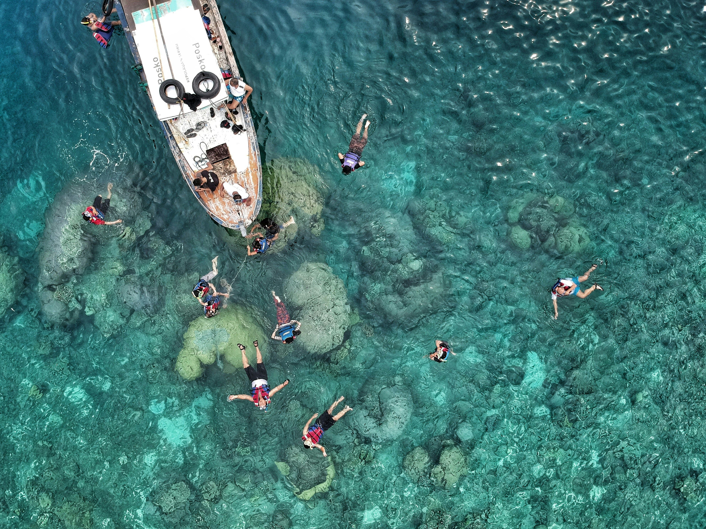
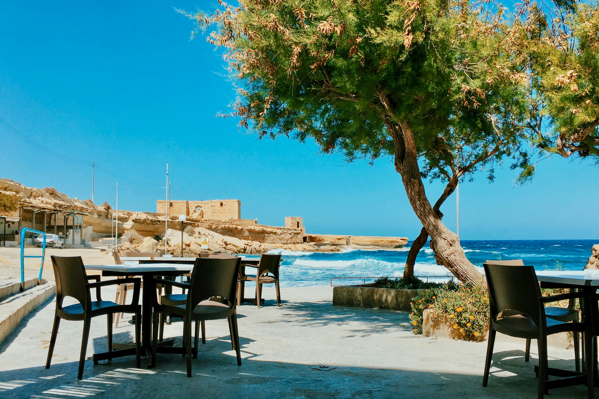

WELCOME TO TANITI
About Our Island
Taniti is a small, tropical island in the Pacific. While the island has an area of less than 500 square miles, the terrain is varied and includes both sandy and rocky beaches, a small but safe harbor, lush tropical rainforests, and a mountainous interior that includes a small, active volcano. Taniti has an indigenous population of about 20,000. Until a recent increase in tourism, most the Tanitian economy was dominated by fishing or agriculture.
Get To Know Our Island

Photo by Eggy Febryano on Unsplash
Things To-Do
Find all of the entertainment and sightseeing locations Taniti has to offer

Photo by Ostap Senyuk on Unsplash
Places To Go
Taniti's local Restaurants, Lodging and Grocery Stores
 Photo by Zoshua Colah on Unsplash
Get Around
All the information needed to get around our lovely island
Photo by Zoshua Colah on Unsplash
Get Around
All the information needed to get around our lovely island
Frequently Requested Information
- Power outlets are 120 volts (the same as in the United States).
- Alcohol is not allowed to be served or sold between the hours of midnight and 9:00 a.m.
- The drinking age on Taniti is 18 and the drinking age is not strictly enforced.
- Many younger Tanitians speak fluent English. Very little English is spoken in rural areas, especially by the older residents.
- There is one hospital and several clinics. The hospital has many multilingual employees.
- Violent crime is very rare on Taniti, but as tourism increases, there are more reports of pickpocketing and other petty crimes.
- Taniti enjoys a large number of national holidays, and many tourist attractions and restaurants will be closed on holidays, so visitors should plan accordingly.
- Taniti uses the U.S. dollar as its currency, but many businesses will also accept euros and yen. Several banks facilitate currency exchange, and many businesses accept major credit cards.